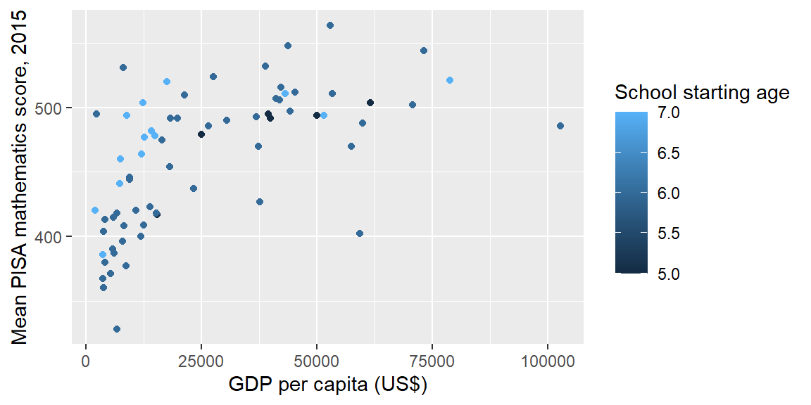
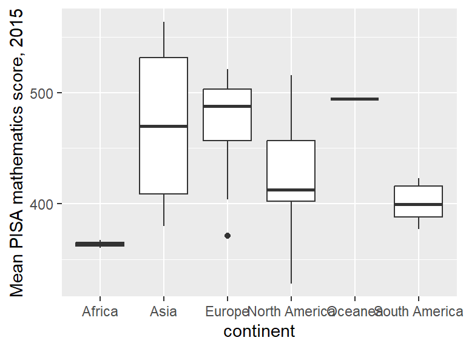
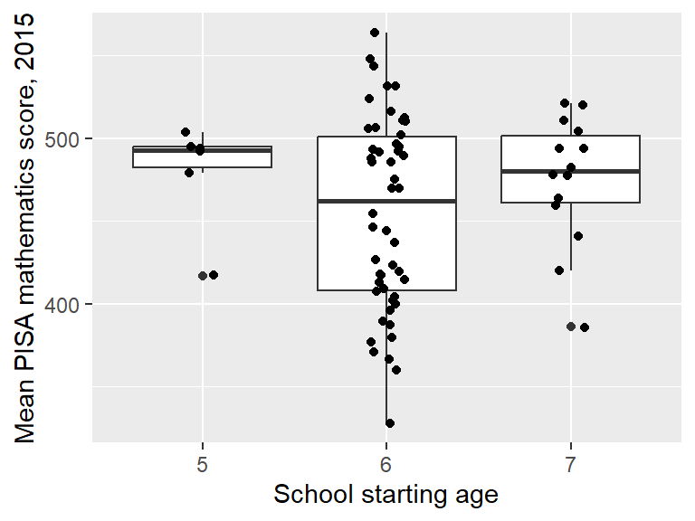

Section 8 Making plots with ggplot2 - recap
R has different choices available for using plots. Two commonly used options are ‘base graphics’ (e.g. using commands such as plot(), hist(), boxplot()) and the package ggplot2 (Wickham, Chang, et al. 2020), (Wickham 2016). It’s a matter of personal preference which you should use; I like to use both: base graphics for drawing diagrams, and ggplot2 for plotting data from data frames. In these notes we will cover plotting with ggplot2.
 (Artwork by @allison_horst)
(Artwork by @allison_horst)
In this section, we’ll concentrate on how to make different types of plots. You’ll almost certainly need to customise the appearance of your plot, and we’ll cover that in the next section.
To illustrate the different types of plots, we will continue to use maths data example. To try these examples out on your own computer, you’ll again need to load the tidyverse as well as import the maths.csv data and create the wealthiest column. The commands to do this are below.
library(tidyverse)
maths <- read_csv("https://oakleyj.github.io/exampledata/maths.csv") %>%
mutate(wealthiest = gdp > 17000)8.1 The general syntax
As an example, we’ll first produce a scatter plot:
ggplot(data = maths, aes(x = gdp, y = score)) +
geom_point(size = 2, alpha = 0.5) +
labs(x = "GDP per capita (US$)",
y = "Mean PISA mathematics score, 2015")
The syntax can look a little complicated at first but you should get used to it! Some general points are as follows.
There is quite a lot to take in here, so just skim read for now, and then have another look once you have seen some examples in the following sections.
- The data we want to plot must be in a data frame.
- All plots begin with a
ggplot()command, specifying the data frame we are using (mathsin this case). - We use the
aes()any time we want something on the plot to represent values in a data frame column, e.g- the position of a point on the \(x\)-axis or \(y\)-axis;
- the colour of a point (different colours depending on variable values). This is sometimes referred to as ‘mapping a column to an aesthetic’. In the example, we mapped the
gdpcolumn onto the \(x\)-axis, and thescorecolumn to the \(y\)-axis.
- Any feature of the points not related to columns in the data frame are specified outside of an
aes()command. Here we usedsizeto make the points a little largeralphato make the points transparent (helpful when points are overlapping).
- The actual type of plot is specified as a “geom”. There will be different
geomcommands for scatter plots, box plots, histograms etc. We usedgeom_point()to make a scatter plot. - We use the
+symbol to combine commands and make a single plot. In the example we’ve added a command to provide axes labels.
8.2 Scatter plots
We’ve seen a scatter plot already, but we’ll repeat the basic syntax here:

Note that, without the labs() command, the axes labels are just the column names.
In any report that you write, you will almost certainly need to specify your own axes labels; the column names will not be suitable. In your labels, include the units of measurement, if appropriate.
8.2.1 Annotating a scatter plot
We may wish to annotate a plot, e.g. labelling a single observation. Here’s an example of labelling the UK (GDP = 39899, score = 492). We’ll also include proper axes labels.
ggplot(data = maths, aes(x = gdp, y = score)) +
geom_point() +
labs(x = "GDP per capita (US$)",
y = "Mean PISA mathematics score, 2015") +
annotate("point", x = 39899, y = 492,
colour = "red", size = 2) +
annotate("text", label = "UK", x = 39899,
y = 492, colour = "red",
hjust = -0.2, vjust = 1)
- The first
annotate()command adds a red circle ("point") at the coordinates \(x=39899\), \(y=492\) (corresponding to the UK), with thesizeset to 2 to make it a little larger. - The second
annotate()command adds some red text (UK) at the coordinates \(x=39899\), \(y=492\), with the argumentshjustandvjustshifting the text slightly horizontally and vertically, so that it appears next to rather than on top of the red dot. It can take a little trial and error to find the values forhjustandvjustthat you are happy with.
8.2.2 Adding a trend
We can see clearly that the maths scores tend to increase as GDP per capita increases, but the relationship doesn’t look linear. If we want to emphasise such a relationship, we can add the trend to the plot, using the extra line geom_smooth() in the plot command:
ggplot(data = maths, aes(x = gdp, y = score)) +
geom_point() +
labs(x = "GDP per capita (US$)",
y = "Mean PISA mathematics score, 2015") +
annotate("point", x = 39899,
y = 492, colour = "red",
size = 2) +
annotate("text", label = "UK",
x = 39899, y = 492,
colour = "red",
hjust = -0.2, vjust = 1) +
geom_smooth() The blue line shows the estimated trend. The grey shaded area indicates uncertainty about this trend (it’s wider on the right hand side, because we have less data there).
The blue line shows the estimated trend. The grey shaded area indicates uncertainty about this trend (it’s wider on the right hand side, because we have less data there).
If we want to plot a linear trend, we add the argument method = "lm" to geom_smooth() (we can use various regression methods within geom_smooth()):
ggplot(data = maths,
aes(x = gini, y = score)) +
geom_point() +
geom_smooth(method = "lm") +
labs(x = "Gini coeffcient",
y = "Mean PISA mathematics score, 2015") 
8.2.3 Representing more than two variables on a scatter plot
We can represent a third variable using colour. Additional variables can be presented using size and shape, although care is needed here; the plot could get difficult to read.
8.2.3.1 Colours for qualitative variables
Here’s an example using colour to represent continent:
ggplot(data = maths,
aes(x = gdp, y = score)) +
geom_point(aes(colour = continent)) +
labs(x = "GDP per capita (US$)",
y = "Mean PISA mathematics score, 2015")
- Note that the mapping of
continenttocolourhas to sit inside anaes()command. - Colours can be specified manually.
ggplot2will attempt to use distinctive colours by default, but this can be hard if there are too many groups.
8.2.3.2 Colours for quantitative variables
Here’s an example using colour to represent start.age:
ggplot(data = maths,
aes(x = gdp, y = score)) +
geom_point(aes(colour = start.age)) +
labs(x = "GDP per capita (US$)",
y = "Mean PISA mathematics score, 2015",
color = "School starting age" )
Note how a ‘continuous’ colour scale has been used. As there are only three distinct starting ages in the data, a ‘qualitative’ colour scale might be better here. To do this, we can convert start.age to a factor variable with the plot commands:
ggplot(data = maths,
aes(x = gdp, y = score)) +
geom_point(aes(colour = factor(start.age))) +
labs(x = "GDP per capita (US$)",
y = "Mean PISA mathematics score, 2015",
color = "School starting age")
8.3 Histograms
Here’s an example of a histogram of the score variable. We only map one column to an axis, and produce the histogram with geom_histogram():

We can scale the histogram so that the total area equals 1:

8.3.1 Customising a histogram plot in R
We’ll redraw the plot with different colours, add a better axis label, specify a histogram bin-width of size 10, and indicate the UK’s score with a red dot:
ggplot(data = maths, aes(x = score)) +
geom_histogram(colour = "blue", fill = "white", binwidth = 10) +
labs(x = "Mean PISA mathematics score, 2015", y = "Frequency") +
annotate("point", x = 492, y = 0, size = 4, colour = "red") 
- The second line now includes extra arguments:
fillsets the colour of the interior of the bars, andcoloursets the colour of the bar edges.binwidthsets how wide each bar is on the \(x\)-axis; - the third line (
labs) specifies the label on the \(x\)-axis; - the fourth line (
annotate) draws a red circle at the coordinates \(x=492, y=0\), andsize = 4increases the size of the circle (the default value forsizeis 1).
8.4 Box plots
Box plots can be useful for comparing multiple distributions, although you may need to explain to your reader how to interpret them! Here’s an example of a box plot to compare scores between the different continents:
ggplot(data = maths, aes(x = continent, y = score)) +
geom_boxplot() +
labs(y = "Mean PISA mathematics score, 2015")
It can be difficult to fit all the labels in on the \(x\)-axis. A simple solution is to draw the box plot ‘horizontally’ (and we’ll specify an empty \(y\)-axis label as we don’t really need one).
ggplot(data = maths, aes(y = continent, x = score)) +
geom_boxplot() +
labs(x = "Mean PISA mathematics score, 2015",
y = "") 
If we wanted to do a box plot of score by start.age, we have to convert start.age to a factor variable using as.factor()
ggplot(data = maths, aes(x = as.factor(start.age), y = score)) +
geom_boxplot() +
labs(x = "School starting age",
y = "Mean PISA mathematics score, 2015")
8.4.1 Adding the observations to a box plot
It may be helpful to show the individual observations as well, for example, if the distribution of points within a group is bimodal; this wouldn’t be apparent from a box plot. It can help to ‘jitter’ the points on the group axis so that each point can be seen clearly. This can be done as follows:
ggplot(data = maths, aes(x = as.factor(start.age), y = score)) +
geom_boxplot() +
labs(x = "School starting age",
y = "Mean PISA mathematics score, 2015") +
geom_jitter(width = 0.1)

8.5 ‘Global’ aesthetics
Aesthetics can be defined in different places, and this affects the appearance of the plot. Here’s an example scatter plot, where we map colour to wealthiest within the geom_point() command:
ggplot(data = maths,
aes(x = gini, y = score)) +
geom_point(aes(colour = wealthiest)) +
labs(x = "Income inequality (Gini coefficient)",
y = "Mean PISA mathematics score, 2015") +
geom_smooth(method = "lm") Note that the trend specified in
Note that the trend specified in geom_smooth() refers to a single trend for all the data. If we instead map wealthiest to colour in the ggplot() command, this is now applied ‘globally’ in all the subsequent geom commands:
ggplot(data = maths,
aes(x = gini, y = score, colour = wealthiest)) +
geom_point() +
labs(x = "Income inequality (Gini coefficient)",
y = "Mean PISA mathematics score, 2015") +
geom_smooth(method = "lm")
8.6 Facets
In some cases, we may wish to create a figure with multiple plots side-by-side, or arranged in a grid. If the plots are of the same type, with the same axes, we can use facets, which will ensure that the scales on each axes are the same, making comparison between the plots easier.
For example, suppose we want a separate scatter plot of score against gdp, for each value of start.age. We can do this as follows:

See ?facet_grid and also ?facet_wrap for more details (look at the examples in particular, for the different ways these plots can be laid out).
8.7 Exercises
Exercise 8.1 For this exercise, you will need the Brexit data frame (from the file Brexit.csv), described in Exercise 6.1.
- Produce a scatter plot of the percentage voting to remain in the EU (within each local authority), against the percentage of adults with Level 4 qualifications.
- Specify suitably descriptive axes labels;
- add a linear trend to your plot;
- colour each point by its
Regionvariable.
- Produce a histogram showing the distribution of the percentage voting to remain in the EU across the different local authorities.
- Specify a suitably descriptive axis label;
- annotate your plot to indicate the vote in Sheffield.
- Produce a box plot for the percentage voting to remain in the EU within each region.
- Experiment with ‘horizontal’ and ‘vertical’ box plots.
8.8 Further reading
There is an RStudio Cheatsheet on
ggplot2: go to Help > Cheatsheets > Data Visualization with ggplot2.The R Graphics Cookbook (2nd edition) is a good reference for making plots with
ggplot2.There is an online tutorial available here: RStudio Primers (Visualize Data)
See also R for Data Science (Chapter 3)